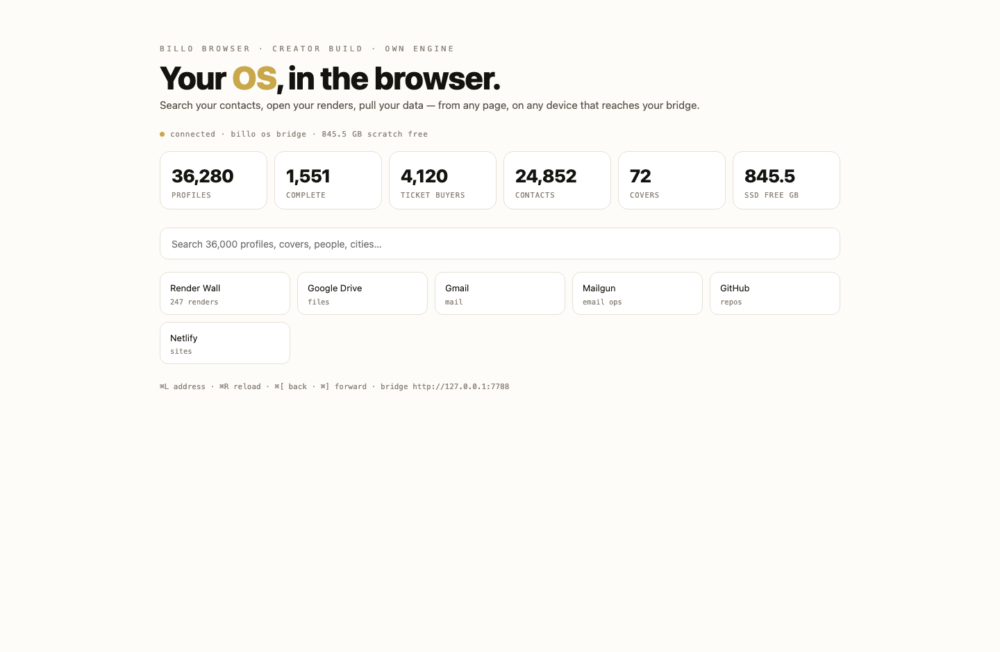

A browser built for creators. Your own engine. Your own data. Billo OS lives inside every tab — contacts, renders, covers, events — without touching Chrome, without a cloud account, without a plugin store.

# 1. start the data bridge python3 ~/BillySorrells/scripts/billo_serve.py # 2. open the browser ~/BillySorrells/tools/billo-browser-rs/target/release/billo_browser # 3. (optional) browse from the CLI, no window billo text https://site.com billo dump https://site.com billo shot https://site.com out.png
| endpoint | returns |
|---|---|
GET /api/stats | live counts: profiles, complete, buyers, contacts, covers, SSD free |
GET /api/search?q= | matching people, cities, covers |
GET /api/open?url= | opens a URL in Billo Browser |